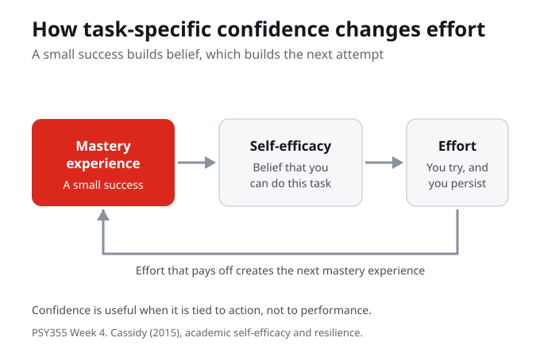
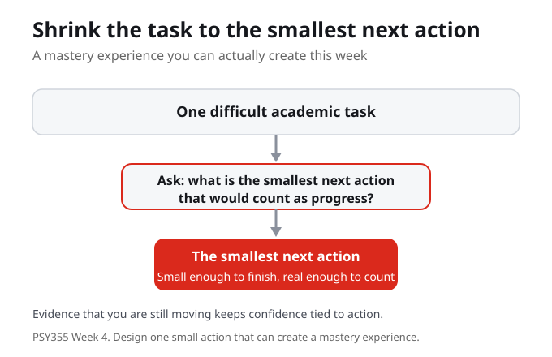

Confidence, self-esteem, and self-efficacy are not the same
The week opens by separating three words that often get used as if they meant one thing. Confidence is a general sense that things will go well. Self-esteem is a judgment of your own worth as a person. Self-efficacy is narrower and more useful: it is task-specific confidence, the belief that you can do this particular task. Because self-efficacy points at a task, it is the belief that actually changes what a student does.
Self-efficacy is task-specific confidence, distinct from a general sense of confidence and from self-esteem as a judgment of worth. Because it points at a task, it is the belief that changes effort.
Take a task you find hard this term. Which is shaky: your general confidence, your sense of worth, or your belief that you can do this specific task?

Task-specific confidence changes effort
With the three words separated, the week uses academic examples to show how task-specific confidence changes effort. When a student believes they can do a task, they are more willing to start, to keep going when it is hard, and to treat a setback as information rather than a verdict. This is where self-efficacy connects to resilience building, the link Cassidy draws between academic self-efficacy and how students keep going under pressure. Confidence here is not a feeling about outcomes; it is a belief about what your effort can do.
Task-specific confidence changes effort by making a student more willing to start, to persist, and to read a setback as information. This is how academic self-efficacy connects to resilience building.
When you have believed you could do something, how did that belief change how much effort you were willing to put in?
Confidence tied to action, not performance
This is the heart of the central question for the week. How does confidence become useful when it is tied to action rather than performance? Confidence tied to performance rises and falls with each grade and each result, much of which a student does not control. Confidence tied to action rests on something a student can always do next, the willingness to take the next step. That is the version of confidence that survives a hard week, because it does not depend on the outcome already being good.
Confidence tied to performance depends on results a student does not fully control. Confidence tied to action rests on the next step a student can always take, so it survives a hard outcome.
Think of a time your confidence rose or fell with a single result. What would it look like to tie it to your next action instead?

Create one small mastery experience
The week ends in something a student can do. A mastery experience is a small success you create on purpose, and it is the most direct way to build self-efficacy. The practice activity is deliberately modest: choose one difficult academic task, then define the smallest next action that would count as progress. Small enough to finish, real enough to count. The point is not to solve the whole task today; it is to give yourself evidence that you can move it at all.
A mastery experience is a small success a student creates on purpose, and it is the most direct way to build self-efficacy. The practice is to shrink a hard task to the smallest next action that counts as progress.
Pick one difficult task. What is the smallest next action that would still count as progress, small enough to finish, real enough to count?
An action that does not pretend the barrier is simple
One caution holds the week together. Tying confidence to a small next action is not the same as pretending a hard situation is easy. The guiding question asks for one concrete action a student could try without pretending the barrier is simple. A mastery experience is honest about the size of the task; it just refuses to wait for the whole task to feel manageable before doing anything. The week stays useful precisely because it does not turn into a demand to feel positive or to disclose something private.
A small next action is not a claim that the barrier is simple. The point is one concrete action a student could try without pretending the difficulty away, so the week stays honest and useful.
For a barrier you face, what is one concrete action you could take that is honest about the difficulty rather than pretending it is simple?
What You Are Learning This Week
Self-Efficacy Is Task-Specific Confidence
Self-efficacy is not the same as general confidence or self-esteem. Confidence is a broad sense that things will go well, and self-esteem is a judgment of your worth. Self-efficacy is narrower and more useful: the belief that you can do this particular task, which is why it is the belief that changes effort.
Confidence Tied to Action Survives a Hard Outcome
Confidence tied to performance rises and falls with results a student does not fully control. Confidence tied to action rests on the next step a student can always take. That is how confidence becomes useful, because it does not depend on the outcome already being good.
Self-Efficacy Connects to Resilience
When a student believes they can do a task, they are more willing to start, to persist when it is hard, and to read a setback as information rather than a verdict. This is the link this week draws between academic self-efficacy and resilience building.
A Mastery Experience Is Something You Create
A mastery experience is a small success you create on purpose, and it is the most direct way to build self-efficacy. The practice is to take one difficult task and define the smallest next action that would count as progress, small enough to finish and real enough to count.